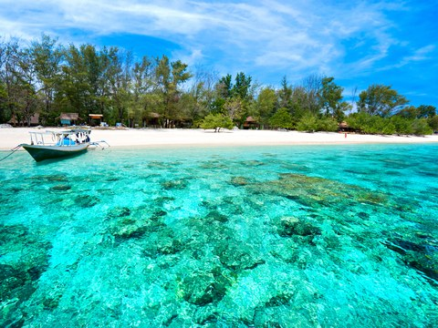
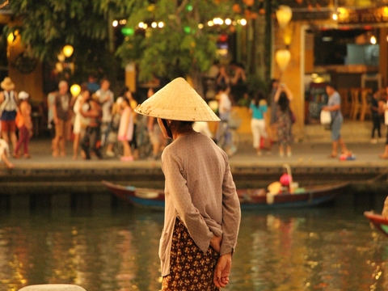
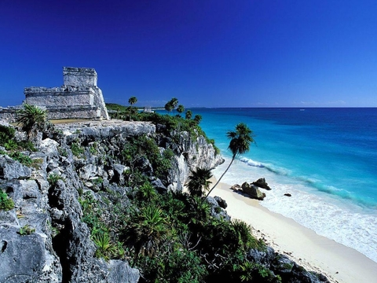

|

|
Lombok - Indonesia
Super cute island 30 mins away from Bali by planes. Good surfing spots, lovely people and awesome beaches.
Lombok is an Indonesian island east of Bali and west of Sumbawa, part of the Lesser Sunda Island chain. It's known for beaches and surfing spots, particularly at Kuta and Banko Banko (in south Lombok). The motor-vehicle-free Gili Islands (Gili Trawangan, Gili Air and Gili Meno), off Lombok’s west coast, offer more beaches, reefs for diving and snorkeling, and a sea turtle hatchery.
|
|

|
Hoi Han - Vietnam
Little city in the middle of Vietnam. Trading point for European in the 16 and 17th century, it has a very laid back and cool attitude as well as an old japanese style bridge.
Hội An is a city on Vietnam’s central coast known for its well-preserved Ancient Town, cut through with canals. The former port city’s melting-pot history is reflected in its architecture, a mix of eras and styles from wooden Chinese shophouses and temples to colorful French colonial buildings, ornate Vietnamese tube houses and the iconic Japanese Covered Bridge with its pagoda.
|
|

|
Tulum - Mexico
Located on the caribbean coast of Mexico, Tulum is an old Mayan site with a lot of vestige and some really awesome beaches. The city of Playa del Carmen and the various island around are also cool for diving.
Tulum is a town on the Caribbean coastline of Mexico’s Yucatán Peninsula. It’s known for its beaches and well-preserved ruins of an ancient Mayan port city. The main building is a large stone structure called El Castillo (castle), perched on a rocky cliff above the white sand beach and turquoise sea. Near the ruins is the Parque Nacional Tulum, a coastal area with mangroves and cenotes (natural limestone sinkholes).
|